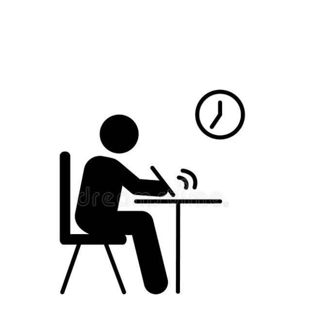

welcome to the first edition of all campus "Daily trend" blog
by the daily trend team.

The University of Nigeria, a leading federal university in Nigeria, is presently in the thick of its examination period for the 2024/2025 academic session. As lectures for various faculties have drawn to a close, students are now engaging in both departmental and inter-faculty exams, marking a pivotal phase of their semester journey.
Exam Schedule & Structure
The university’s academic calendar was updated ahead of time to accommodate the examination timeline,
showing that exams often begin shortly after a revision period.
For the first semester, departmental exams are set to hold over two days, followed by inter-faculty
and interdisciplinary exams that stretch over the subsequent weeks.
In many departments, computer-based tests (CBT) are in use — for example, students in the Physics department
are expected to write the CBT exam for PHY 118: General Physics for Physical Sciences III under the second semester schedule.
The university’s management also occasionally releases adjustment notices for exam timetables, ensuring
that unforeseen conflicts or scheduling overlaps are resolved in time.
Challenges & Considerations
What Students Should Expect & Do
UNN exams continue .....
Current Ongoing Exams at the University of Nigeria
The University of Nigeria, a leading federal university in Nigeria, is presently in the thick of its examination period for the 2024/2025 academic session. As lectures for various faculties have drawn to a close, students are now engaging in both departmental and inter-faculty exams, marking a pivotal phase of their semester journey.
Exam Schedule & Structure
The university’s academic calendar was updated ahead of time to accommodate the examination timeline,
showing that exams often begin shortly after a revision period.
For the first semester, departmental exams are set to hold over two days, followed by inter-faculty
and interdisciplinary exams that stretch over the subsequent weeks.
In many departments, computer-based tests (CBT) are in use — for example, students in the Physics department
are expected to write the CBT exam for PHY 118: General Physics for Physical Sciences III under the second semester schedule.
The university’s management also occasionally releases adjustment notices for exam timetables, ensuring
that unforeseen conflicts or scheduling overlaps are resolved in time.
Challenges & Considerations
- Given that many exams now use computer-based formats, infrastructure reliability (power, network, and hardware) becomes critical. Any failure in these systems could disrupt the process or delay exams.
- With tight schedules across departments and faculties, coordination is essential. Departments must align so that students sitting in multiple courses do not suffer exam clashes.
- Some students may face academic or administrative hurdles — such as result upload delays, course registration issues, or departmental disputes — which can complicate their ability to fully participate.
What Students Should Expect & Do
- Check your timetable often: Because adjustments can occur, staying updated via the university portal or departmental notice boards is vital.
- Prepare for CBT conditions: If your exam is computer-based, make sure you are comfortable with the format, have practiced typing or navigating online exam platforms, and have checked the system requirements.
- Use revision weeks wisely: Before exams officially begin, a dedicated revision period helps students consolidate knowledge and manage stress.
- Have backup plans: Ensure your device, power, and internet (if needed) are stable in advance. Be ready for contingencies.
- Adhere strictly to exam rules: Universities often enforce strict disciplinary measures for cheating, unauthorized materials, or procedural disobedience during exams.